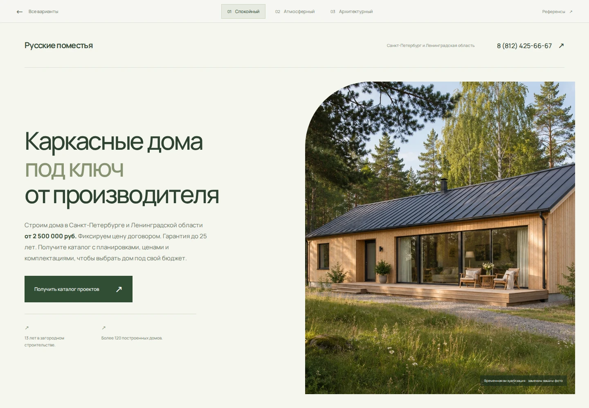
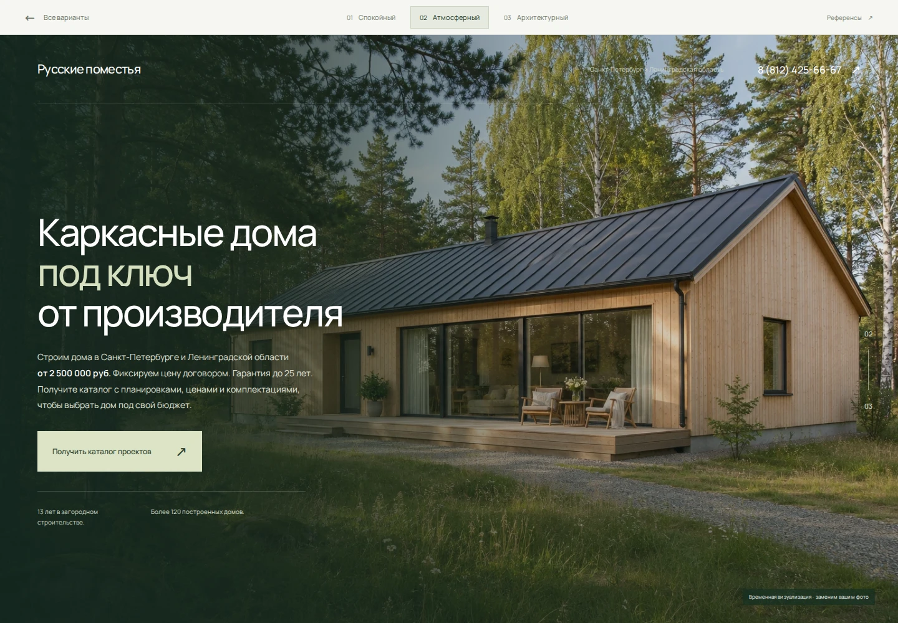
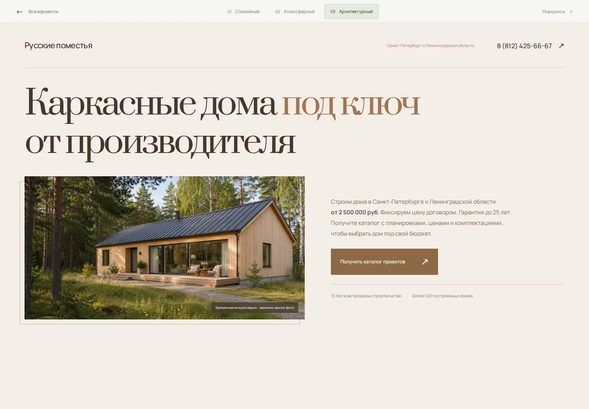

ТРИ ВАРИАНТА · ОДИН ТЕКСТ
С чего начнётся
ваш будущий сайт
Выберите настроение первого экрана.
Тексты взяты из вашего файла без изменений.

01Спокойный
Светлый экран, текст слева, крупное фото справа. Самый прямой и понятный вариант.

02Атмосферный
Дом на весь экран. Глубокий зелёный, белый текст, акцент на ощущении загородной жизни.

03Архитектурный
Крупная антиква, тёплый фон и журнальная композиция. Акцент на архитектуре и материале.
Начать с варианта 01.
Он сразу объясняет предложение и оставляет достаточно места фотографии дома. Хорошо подходит для первого знакомства с компанией.
На макетах временная визуализация, не построенный объект. Заменим вашим фото. Логотип не перерисовывали: пока использовано обычное название компании.
Сейчас согласовываем только визуал. Форм нет, кнопка каталога демонстрационная. Видео из ВК добавим на следующем этапе.